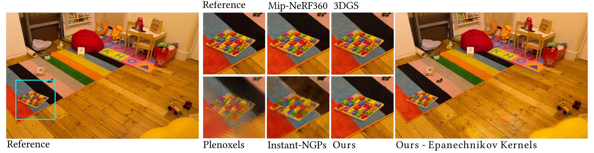
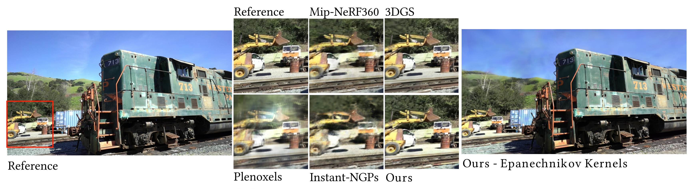
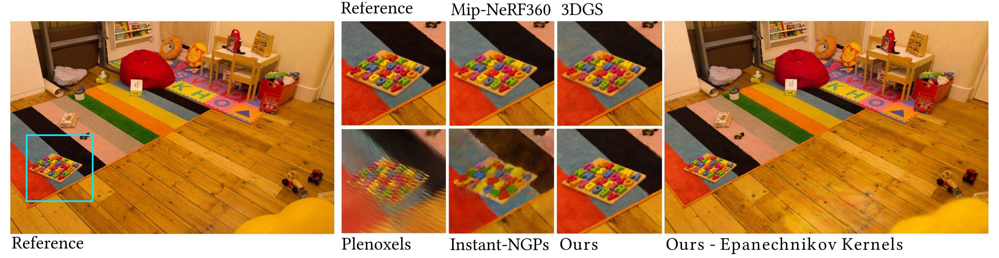
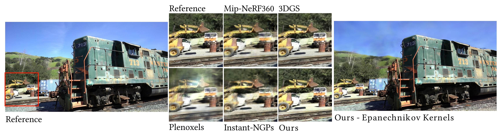

<<<<<<< HEAD
We represent a complex volumetric cloud using traditional grid-based methods (left and right, 10243 voxel grid resolution, 4GBs) and our primitives-based
=======
1Meta Reality Labs2 USI Lugano, Switzerland
<<<<<<< HEAD
We represent a complex volumetric cloud using traditional grid-based methods (left and right, 10243 voxel grid resolution, 4GBs) and our primitives-based
>>>>>>> 1ce4820 (new project page WIP)
=======
We represent a complex volumetric cloud using traditional grid-based methods (left and right, 10243 voxel grid resolution, 4GBs) and our primitives-based
>>>>>>> 57e6df0 (updated CV, new paper page)
=======
We represent a complex volumetric cloud using traditional grid-based methods (left and right, 10243 voxel grid resolution, 4GBs) and our primitives-based
>>>>>>> e45b681 (new papers added and updated DSYG with TOG acceptance. LFS for pdfs)
representation using Gaussian kernels (middle, 5.6k primitives, 224KBs), and render it with volumetric path tracing. Our method achieves substantial speedups
thanks to the analytical transmission estimation and sampling, our efficient rendering approach and its extremely compact representation. When compared to
the original asset, at a potential cost of detail (Figure 7), we provide large performance and memory compression benefits. Asset is part of the Walt Disney
Animation Studios cloud dataset (CC-BY-SA 3.0). Rendering times reported on a NVIDIA A6000.
Efficient scene representations are essential for many computer graphics applications.
A general unified representations that can handle both surfaces and volumes simultaneously, remains a research challenge.
Inspired by recent methods for scene reconstruction that leverage mixtures of 3D Gaussians to model radiance fields,
we formalize and generalize the modeling of scattering and emissive media using mixtures of simple kernel-based volumetric
primitives. We introduce closed-form solutions for transmittance and free-flight distance sampling for different kernels,
and propose several optimizations to use our method efficiently within any off-the-shelf volumetric path tracer.
We demonstrate our method as a compact and efficient alternative to other forms of volume modeling for
forward and inverse rendering of scattering media. Furthermore, we adapt and showcase our method in radiance
field optimization and rendering, providing additional flexibility compared to current state of the art given
its ray-tracing formulation. We also introduce the Epanechnikov kernel and demonstrate its potential as
an efficient alternative to the traditionally-used Gaussian kernel in scene reconstruction tasks.
The versatility and physically-based nature of our approach allows us to go beyond radiance fields and
bring to kernel-based modeling and rendering any path-tracing enabled functionality such as scattering,
relighting and complex camera models.
<<<<<<< HEAD
<<<<<<< HEAD
Mixture Models of Arbitrary Kernels: Epanechnikov Volumes are Faster and Better Fits for Hard Surfaces
Jorge Condor, Sébastien Speierer, Lukas Bode, Aljaz Bozic, Simon Green, Piotr Didyk, Adrian Jarabo,
Don't Splat your Gaussians: Volumetric Ray-Traced Primitives for
Modeling and Rendering Scattering and Emissive Medias, ArXiv (May'24)
<<<<<<< HEAD
<<<<<<< HEAD
=======
>>>>>>> 57e6df0 (updated CV, new paper page)
@misc {Condor2024Gaussians,
title = {{Don't Splat your Gaussians: Volumetric Ray-Traced Primitives for Modeling and Rendering Scattering and Emissive Media}},
author = {Jorge Condor and Sebastien Speierer and Lukas Bode and Aljaz Bozic and Simon Green and Piotr Didyk and Adrian Jarabo},
year = {2024},
eprint = {2405.15425},
archivePrefix={arXiv},
primaryClass={cs.GR},
url={https://arxiv.org/abs/2405.15425}
<<<<<<< HEAD
=======
@inproceedings {Condor2022,
booktitle = {Eurographics Symposium on Rendering},
editor = {Ghosh, Abhijeet and Wei, Li-Yi},
title = {{A Learned Radiance-Field Representation for Complex Luminaires}},
author = {Condor, Jorge and Jarabo, Adrián},
year = {2022},
publisher = {The Eurographics Association},
ISSN = {1727-3463},
ISBN = {978-3-03868-187-8},
DOI = {10.2312/sr.20221155}
>>>>>>> 1ce4820 (new project page WIP)
=======
>>>>>>> 57e6df0 (updated CV, new paper page)
}
Acknowledgements
<<<<<<< HEAD
<<<<<<< HEAD
=======
>>>>>>> 57e6df0 (updated CV, new paper page)
We would like to thank Christophe Hery and Olivier Maury for their
continued support throughout this project and proof-reading. Jorge
Condor and Piotr Didyk have been supported by the Swiss National
Science Foundation (SNSF, Grant 200502) and an academic gift from
Meta.
<<<<<<< HEAD
=======
>>>>>>> 1ce4820 (new project page WIP)
=======
>>>>>>> 57e6df0 (updated CV, new paper page)
 


